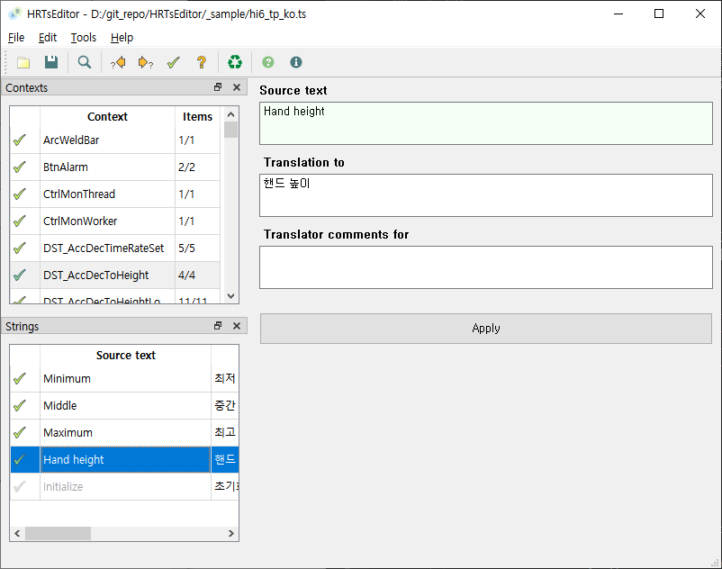

Hi6 제어기의 티치펜던트 U/I는 Qt Linguist 소프트웨어로 다국어화할 수 있습니다.
각 언어별로 한 개씩의 .ts (Qt translation) 파일을 생성하며 Linguist에서 번역 문자열들을 입력합니다.
Qt Linguist를 사용하기 위해서는 GUI framework인 Qt 전체를 다운로드 받아 설치해야 하는데 용량이 매우 큽니다.
HRTsEditor는 Qt Linguist를 부분적으로 대체할 수 있으며 아래와 같은 장점이 있습니다.
단, Qt Linguist의 기능 중 아래 기능들은 없습니다.
구버전이 설치되어 있으면 먼저 설치 제거 하십시오.
HRTsEditorInstaller.exe를 실행하십시오. (subst로 생성한 드라이브에서 실행하면 설치 실패할 수 있으니 유의하십시오.)
Next 버튼을 클릭하면서 설치를 진행하십시오.
윈도우 시작 버튼에서 HRTsEditor를 클릭하여 실행하십시오.

File - Open... 메뉴를 선택하거나, 툴 버튼을 클릭하여 .ts 파일을 여십시오.
.ts 파일은 문자열들을 소프트웨어 내의 각 객체별로 그룹핑하여 관리하는데, 이 그룹을 context라고 지칭합니다.
좌상단의 Contexts 테이블에는 context들의 이름이 열거됩니다.
좌하단의 Strings 테이블에는 Contexts 리스트에서 선택한 현재 context에 포함된 문자열들이 열거됩니다.
Context 선택 후 String 항목 하나를 선택하면 우측에는 원본 문자열, 번역본 문자열, 주석이 표시됩니다.
주석은 번역 과정에서 메모할 내용을 적어두는 항목으로서 번역 결과에는 영향을 주지 않습니다.

Strings 테이블은 총 3개의 열로 구성됩니다.
2번째 열에는 원본 문자열이 표시되고, 3번째 열에는 번역번 문자열이 표시됩니다.
1번째 열의 아이콘 항목의 type이며 각기 아래와 같은 의미입니다.
다음 조작 중 하나를 하면, mark as finished를 수행한 후, 다음 unfinished 항목으로 이동하기 때문에 편집을 빠르게 수행할 수 있습니다.
아래 조작을 통해 이전/다음 unfinished 항목으로 쉽게 이동할 수 있습니다.
File - Save as... 메뉴, 혹은 툴 버튼을 클릭하여, 편집한 내용을 .ts 파일로 저장할 수 있습니다.
기존에 Lingobit 소프트웨어에서 작성한 번역 프로젝트가 있다면 이 번역 내용을 HRTsEditor에 import할 수 있습니다.
.ts 파일의 각 원본 문자열을 .csv에서 찾아 동일한 원본 문자열 항목이 있으면 .csv의 번역 문자열을 .ts로 해당 항목으로 복사하는 방식으로 import를 수행합니다.
우선 Lingobit 소프트웨어에서 번역 프로젝트를 연 후, File - Export - Export text/CSV 메뉴를 선택하고 .csv 파일로 저장하십시오.
다음으로 HRTsEditor에서 .ts 파일을 여십시오.
Tools - Import .csv translation... 메뉴, 혹은 툴 버튼을 클릭하여, import 대화상자를 여십시오.
Pathname에 .csv파일의 경로파일명을 입력하거나 버튼을 클릭하여 선택하십시오.
이제 Import 버튼을 클릭하고 Import가 수행되는 동안 잠시 기다려 주십시오. 진행막대가 100%가 되면 우 상단 X 버튼을 클릭해 대화상자를 닫으십시오.
import 버튼을 클릭하면 Hi5a 원본의 각 alarm 코드에 대해 Hi6의 원본의 각 alarm 코드와 비교합니다.
두 원본의 메시지가 동일할 경우, Hi5a의 번역본 도움말을 Hi6의 번역본으로 복사해줍니다.
import 되지 못한 나머지 alarm 코드들에 대해서 번역 작업을 수행하십시오.